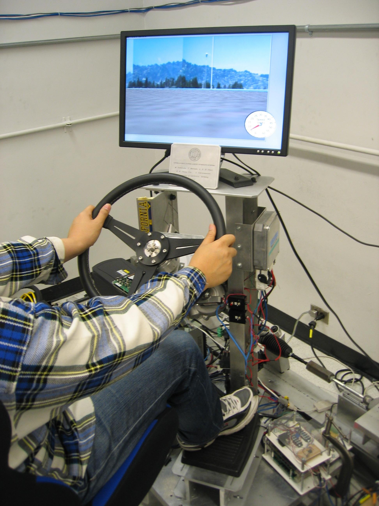

Intelligent Power Assist Steering System
Introduction
Electric power steering (EPS) systems have recently become a popular choice for automotive steering, particularly in small and medium-sized cars. Compared to conventional hydraulic power steering, EPS has several advantages, such as an electronically variable steering boost function, improved operational efficiency and reduced environmental emission. Although steer-by-wire possesses similar advantages, it has only found limited acceptance in the automotive industry. Consequently, EPS will remain the predominantly used steering system technology for the next decade.
Currently, EPS systems are equipped with a torque sensor to measure the driver's steering effort. A torsion bar element, as shown in Fig.1, is widely used to detect the driver's intention. However, the measured torque is not exactly equal to the applied torque. This discrepancy is caused by the physical connection between the driver and front wheels, and the steering column dynamics. In addition, disturbances such as road-tire interaction contribute to the difference between sensed and actual torque values.
Upon receiving the torque signal, the controller computes the desired motor current to assist the driver. The conventional EPS controller determines the required motor current by amplifying the torque sensor signal by a certain non-linear gain.

Fig. 1: Typical mechanism of electric power steering
Steering System
The primary limitation of conventional controllers lies in their indiscriminate amplification of the sensed torque. Conventional EPS controllers do not take into account other factors that may affect steering performance, such as the road-tire interaction, and the history of steering assistance.
The proposed controller considers these factors as well, and accurately estimates the steering effort applied by the driver. Therefore, the new controller does not blindly assist driver, but evaluates how much assistance is required and then commands the motor to provide the appropriate torque.
As a result, this Intelligent Power Assist Steering System is more sophisticated and delivers smoother performance than the conventional system.
Experimental Setup
Combining National Instruments' FPGA board and software enables us to construct a feedback loop consisting of sensors, real-time control, and actuation. All control has been implemented on a modular experimental electric power steering test bench. Features include driver steering wheel with brake and acceleration inputs, mechanical spring mass representation of road tire interaction, and visual road feedback through simulation. This test bench has the ability to be configured with a simple EPS steering system or even with a steer-by-wire system.



Research Topics
- Disturbance Observer
- Friction Compensation
- Nonlinear Sliding Mode Control
- Passivity
- H-Infinity Robust Control
Related Publications
El-Shaer, S. Sugita, and M. Tomizuka, "Robust Fixed-Structure Controller Design of Electric Power Steering Systems," American Control Conference, 2009.
S. Sugita, A. El-Shaer, and M. Tomizuka, "Human Machine Interaction in Vehicle Steering," SAE World Congress, 2009.
Researchers
Visiting Scholars |

Sponsors